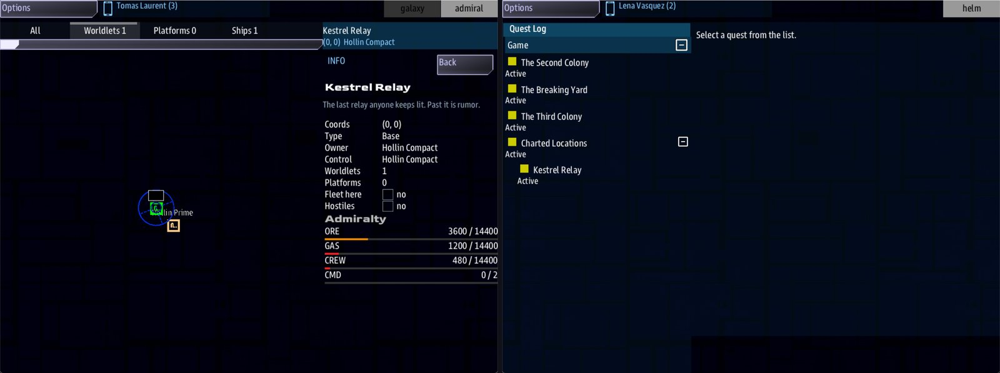

Class 5, Lecture 15 - The Admiral, part 2: an Admiral alongside a bridge crew¶
What you will have at the end¶
Your own universe with a second seat in it. The bridge crew flies The Kestrel Verge as they always have. Beside them, if somebody wants the chair, an Admiral looks down on the home system, builds a Headquarters on Hollin Prime, commissions Commodore Maren and starts on a ladder of research. If nobody wants the chair, the crew's evening is exactly the one you have already written.
You will know the three things that switch the Admiral on, what the game does with the numbers you write, how a campaign with an Admiral ends, and what comes back after Continue. Every one of those was read out of the running game.

The Admiral looking down on the home system, and the bridge crew's Quest Log with the three leads.You change one word in kestrel_verge.amd and add four chapters at its end. Lecture 14
wrote those chapters in a lab. Today they come home.
The video¶
About 5 minutes. Subtitles are available in the player.
Before you start¶
- Your
MyUniversemission as Lecture 13 left it.story.mastmatchesc5-13-battles-part-2\example\;kestrel_verge.amdandsettings.yamlmatchc5-12-battles-part-1\example\. sbs lint MyUniversesayscleanfor all six files.- Lecture 14, in its lab. You do not need the lab's files: every line is on this page.
- The game closed, and the save deleted:
C:\Cosmos\data\missions\common_data\saves\universe_save_the_kestrel_verge_1.yaml.
This lecture is a side road, and it joins the main road again. Lecture 16, the capstone, starts from Lecture 13's files. What you add today goes at the end of your file and changes one word, and Lecture 16 was walked again with all of it in place: both of its sittings went row for row as its page says.
Words for this lecture:
| Word | Meaning |
|---|---|
| Seat | A place at the table. The Admiral's seat is a console, like Helm |
| Empty seat | A game where nobody sits at the Admiral's console |
| Pool | A side's stock of ore, gas or crew, from Lecture 14 |
campaign |
The mode for one story played over many evenings, with an Admiral only if you write one |
Step 1 - Three things switch it on¶
A campaign has no Admiral unless you ask for one. You ask by writing chapters.
| The game needs | Where | Yours today |
|---|---|---|
| The Admiral's library, loaded | story.json |
Step 2 |
Mode: campaign, and an Admiralty chapter in this file |
kestrel_verge.amd |
Steps 3 and 4 |
| A Worldlets chapter with at least one world in it | kestrel_verge.amd |
Step 4 |
Each of these was left out in turn, with the other two in place, and the game was played.
| Left out | What the game did |
|---|---|
| The library line | No Admiral console, no world in the home system. The chapters were read by nothing |
| The Admiralty chapter | The same: no console, no world, empty pools |
| The Worldlets chapter | The same |
| Nothing: all three in place | The Admiral console is offered. Hollin Prime is in the home system. The pools hold 3,600 ore, 1,200 gas and 480 crew |
And two things that are not enough:
| You have | What the game did |
|---|---|
Mode: campaign and no chapters |
No Admiral. Nothing the crew can see is different from Mode: story |
The chapters, and Mode: story |
No Admiral. story never has one |
So the chapters are the switch. To take the Admiral out again, for one evening or for
good, you do not have to delete your work. Change the key of the Admiralty chapter's
heading, or put the mode back to story.
Step 2 - The library line¶
In VS Code, open story.json in MyUniverse. It is a list of the libraries your
mission runs on. Look at the end of the list under "mastlib". It should end with these
two lines:
"artemis-sbs.OpenUniverse.universe_core.v1.4.0.mastlib",
"artemis-sbs.OpenUniverse.admiral.v1.4.0.mastlib"
A mission made with sbs create -t ou today has both. If yours has only the first, it
was made before the template changed. "If something goes wrong" has the exact change.
Do not type anything else in this file.
The line by itself does nothing. With the library loaded and no chapters in the file there was no Admiral, no world and no pool.
Step 3 - The mode¶
Open kestrel_verge.amd and find the Scenario chapter. Change one word.
story was right while the universe was one evening long. campaign is the mode for
the same universe played over many evenings, which is what Class 6 makes of it. For the
crew nothing changes today: this one edit was played with nothing else, and there was no
Admiral, no world and no pool.
Step 4 - Bring the four chapters home¶
Go to the very end of kestrel_verge.amd, after the Dialogue chapter. Leave an empty
line, and add the four chapters. They are Lecture 14's, with the Verge's own names.
## [Worldlets](worldlets)
### [Hollin Prime](hollin_prime)
---
Also: economy
Yields: crew 3, ore 4, gas 1
Reserve: unlimited
Palette: base #2f6e3a, clouds #ffffff
---
The world the Compact farms. People, a little industry, and somewhere to come home to.
### [The Lamp](the_lamp)
---
Also: economy
Yields: gas 10
Reserve: 6000
Palette: base #2c4a8c, clouds #b8c4e0, bands 3.7
---
The banded giant the relay was named for. Its high winds are fuel.
## [Admiralty](admiralty)
---
Worldlet chance: 40%
Command points: 2
---
The Compact has never had a navy. It has a relay, two worlds worth digging, and you.
## [Officers](officers)
### [Commodore Ilse Maren](maren)
---
Title: the Harbormaster
Values: by-the-book 40, honest 30
Face: female
---
Thirty years of freight schedules. Her fleets come home fueled, counted and on time.
## [Research](research)
### [Deeper Silos](silos)
---
Branch: engineering
Costs: ore 120, gas 40
Time: 40
Unlocks: storage 500
---
Bigger tanks and deeper bunkers. The stockpiles hold more.
### [Hot Drills](hot_drills)
---
Branch: engineering
Costs: ore 180, gas 90
Time: 60
Requires: silos
Unlocks: extraction 25%
---
Every extractor works a quarter again as fast.
Three things are different from the lab.
Where they go. At the end of the file. Nothing above them moves.
Home. The Hollin Compact's Home: is 0, 0, the system every new game starts in.
The home system still gets its world: Hollin Prime, the first world in the chapter that
says Reserve: unlimited. If no world says so, it is the first world in the chapter.
Raids. In the lab you wrote Skirmish pressure: none to keep raiders off while you
learned. A campaign leaves raids off unless you ask: the game's own setting was off.
Skirmish pressure: border turns them on. That line was read by the game, and no raid
was played for this page.
The finished file is in example\kestrel_verge.amd.
Step 5 - What the game does with your numbers¶
In Lecture 14 the lab multiplied what you wrote. Your universe does too, by different
amounts, because campaign runs at the epic pace and not the lab's brisk.
Two things multiply. The pace is yours: it is one word, Economy pace:, and epic
gives a long game big tanks. The other is a test setting the game's makers left on,
which makes every Admiral's stocks and yields eight times what they would be. It is
still on in the released game. Research is not touched by either.
| You write | The game used | Multiplied by |
|---|---|---|
Nothing: Start ore: is the game's own 300 |
3,600 ore at the start | 12 |
Nothing: Start gas: 100, Start crew: 40 |
1,200 gas, 480 crew | 12 |
Nothing: Storage: is the game's own 600 |
Each pool can hold 14,400 | 24 |
Yields: crew 3, ore 4, gas 1 |
With one Extractor, ore rose 16 in 30 seconds: 32 a minute | 8 |
Reserve: 6000 |
The game's own figure for a reserve is 40 times what you write. No world was run dry for this page | 40 |
Costs: ore 120, gas 40 on research |
120 ore and 40 gas | Not multiplied |
Time: 40 on research |
Done 41 seconds after the press | Not multiplied |
Unlocks: storage 500 |
Each pool could hold 14,900 | Not multiplied |
| A platform's cost | 150 ore and 15 crew for a Headquarters | Not multiplied |
With Economy pace: standard in the Admiralty chapter the game started with 2,400 ore,
800 gas and 320 crew, and tanks of 4,800: eight times what you wrote, and nothing more.
So the Admiral in your universe is rich. A Headquarters and all eight other platforms
cost 1,690 ore between them, and the game starts with 3,600. Do not balance these
numbers yet. Write the ones your story suggests, and tune when the test setting is
gone. The one number to respect today is the first: a Headquarters costs 150 ore, so
never write a Start ore: that leaves less than that. Start ore: 10 was tried, and
the game started with 120.
Step 6 - Check it¶
== dialogue\deepwell.amd ==
clean
== dialogue\gleaners.amd ==
clean
== dialogue\hollin.amd ==
clean
== jobs.amd ==
clean
== kestrel_verge.amd ==
clean
== lore.amd ==
clean
6 amd + 1 mast file(s): 0 error(s), 0 warning(s)
Six files, all clean, as before. The four chapters add no warning.
Each row below was made on purpose, one change to the finished files, then linted, then played.
Mistakes lint finds
| The mistake | What the game does | What lint says |
|---|---|---|
Mode: campain |
The game takes it as sandbox. There is an Admiral, the pace is standard, and raids are on |
A warning: "Mode: campain is not a valid map value (story/sandbox/skirmish/war/campaign)" (unknown-enum-value) |
## [Worldlets](worlds) |
No Admiral at all | A warning on each Palette: line: "this record is being read as a map because of where it sits (under worlds)" (unknown-field) |
### [Admiralty](admiralty), with three hashes |
No Admiral at all. The chapter has become a world | A warning on each dial: "Worldlet chance is not a field a landmark has" (unknown-field) |
Economy pace: fast |
Taken as standard |
A warning: "Economy pace: fast is not a valid map value (brisk/standard/epic)" (unknown-enum-value) |
A world with no Also: economy line |
Nothing changes. The world yields as before | Two warnings: "Yields is not a field a landmark has", and the same for Reserve (unknown-field) |
The comma left off the line above the Admiral's in story.json |
Not played. The game cannot read its list of libraries | One error, under story.json, and nothing else: "story.json cannot be read: expecting ',' delimiter (line 28, column 9). The usual cause is a comma missing from the end of the line above" (story-json) |
The library's name misspelled in story.json |
Not played | An error: "Cannot load file init.mast from library ..." naming the file it could not find |
Mistakes lint cannot see
Lint says clean for every one of these.
| The mistake | What the game does |
|---|---|
## [Admiralty](admiral), the key misspelled |
No Admiral at all: no console, no world, empty pools |
The Admiral's line missing from story.json |
No Admiral at all |
Mode: story left as it was |
No Admiral at all |
Start ore: 10 |
The pool starts at 120, less than a Headquarters costs. The Admiral can build nothing, and so can never earn anything |
Time: 2 minutes on a research step |
The game read it as 2, and dropped the word. Write seconds, as a number alone |
Time: forty |
The game keeps the word. Lecture 14 measured what happens when that step is started: the game stops with an error |
Reserve: 5000 on Hollin Prime, so that no world says unlimited |
Hollin Prime is still home, because it is first in the chapter. Its reserve is the number you wrote |
Three things that look wrong and are not:
| You wrote | What the game does |
|---|---|
Mode: Campaign, with a capital |
Works as campaign |
| An Admiralty chapter with an empty fence, or with no fence at all | Works. The Admiral is on, and every dial is the game's own |
Also: economy in a research record |
Works. Time: 40 is still 40 |
Step 7 - Play it, with both seats filled¶
Nobody has seen the Admiral console for this page. The steps below are what the game
did when a script made the Admiral's camera and pressed the Admiral's buttons by their
text. If no Admiral window opens, start with server,helm,comms and change one
window's console to Admiral.
| The Admiral does | What the game did | |
|---|---|---|
| 1 | Looks at the home system | One world: Hollin Prime. Pools: 3,600 ore, 1,200 gas, 480 crew |
| 2 | Selects Hollin Prime | One button: Build Headquarters (150 ore, 15 crew) |
| 3 | Presses it | "Construction started: Headquarters." The pools drop to 3,450 ore and 465 crew at once. About half a minute later: "Headquarters complete." |
| 4 | Selects Hollin Prime again | Eight more platforms on offer, with Lecture 14's costs |
| 5 | Builds an Extractor, an Academy, a Shipyard and a Lab | One at a time: the Admiralty builds one thing at once, and the menu waits for it. Build shows what is under way. With the Extractor, ore climbs by about one every two seconds |
| 6 | Selects the Shipyard | One button, because you wrote one officer: Commission Commodore Ilse Maren - the Harbormaster |
| 7 | Presses it | A fleet of three ships at the Shipyard, on the crew's own side: two light cruisers and a battle cruiser. Forces lists it: Commodore Ilse Maren, holding, three ships |
| 8 | Selects a ship of the fleet | Hail, Escort the flagship, Patrol the system, Strike hostiles, Salvage wrecks, Withdraw to base |
| 9 | Selects the Lab | Research Deeper Silos [engineering] |
| 10 | Presses it, and waits 41 seconds | "Research complete: Deeper Silos." Each pool can hold 14,900. The Lab offers Research Hot Drills [engineering] |
While the Admiral did all that, the bridge crew's game was untouched: 500 credits, the same three leads in the Quest Log. The Admiral's ore is not the crew's credits. They are separate stocks.
Step 8 - Play it with the Admiral's seat empty¶
This is the question a writer should ask first: what does my story cost a table that does not want an Admiral?
Lecture 16's whole evening was walked this way: your four chapters in the file, nobody at the Admiral's console, two sittings with the save kept between them.
| With the seat empty | What was measured |
|---|---|
| Hollin Prime | It is in the home system. It is scenery |
| The pools | Seeded at 3,600, 1,200 and 480, and never spent. Nothing is built, so nothing is earned |
| Raids on the Admiral's platforms | There are no platforms, and raids are off |
| The crew's evening | Every row of Lecture 16's two sittings came out as that page gives it: the same credits at each stop, standing 25 with the Compact and 20 with the Assembly, eleven hostile ships at the Bone Pile, and the game won with your Win: sentence |
So you can ship one universe to both kinds of table.
Step 9 - How it ends: victory is a quest¶
The Admiral's game has no ending of its own here. With one commanded side there is nobody to conquer and nobody to be conquered by, and nothing the Admiral builds or researches ends the game.
A campaign ends where your Goals chapter says it does. You wrote that in Lecture 7:
Its Win: line is the campaign's victory, with an Admiral in the game or without.
It was played with your four chapters in the file. The crew broke the Bone Pile, and the game ended, won, with your sentence: "The Bone Pile is broken, and what was taken from the Tern is going home."
Then the same game was started again. It did not end a second time. The crew was sent one card, titled Campaign won: "This campaign has been won (Break the Bone Pile). The story is finished and the galaxy is still here - fly on." The pools were still there, at 3,600, 1,200 and 480, waiting for an Admiral. So a crew that has won can go on flying, and a table that gains an Admiral late finds the chair ready.
That last check was made with the Admiral's seat empty. A won campaign continued with platforms already standing was not played. Step 10 shows platforms coming back after a Continue in a campaign that is still open.
The game's guide describes two more victories written as quests: destroying another side's capital, and a signal sent when a side loses its last Headquarters. Both need a second side with an Admiral of its own. Your universe has one, so neither is taught here, and neither was played.
One honest limit. Nothing the Admiral does sends a signal a quest can wait for. You cannot yet write "the story moves on when the Admiral has built a Shipyard". The Admiral helps the story the way a fleet does: by being there.
Step 10 - Stop, and Continue¶
After Step 7, close every window. Start the game again with the same line.
| What I checked | Before I stopped | After Continue |
|---|---|---|
| The pools | 2,634 ore, 1,131 gas, 419 crew | The same |
| What a pool can hold | 14,900 | 14,900 |
| Platforms at Hollin Prime | Headquarters, Extractor, Academy, Shipyard, Lab | All five |
| Maren's fleet | Three ships, holding | Three ships, holding |
| Research | Deeper Silos done, Hot Drills on offer | The same |
| The crew | 500 credits, three leads | The same |
Twenty seconds after the second start the ore was 2,646. The Extractor was working again.
What you need to know about an Admiral in your universe
| Fact | What it means for a writer |
|---|---|
| The chapters are the switch | An Admiralty chapter and a Worldlets chapter in your own file, with the library loaded and Mode: campaign |
| The seat can be empty | The crew's story does not need an Admiral. Never write a lead that does |
| The Admiral's side is the crew's side | The fleet is on the crew's side and flies the crew's hulls. An Admiral for the Hollin Compact still flies light cruisers today |
| Ore, gas and crew are not credits | The Admiral cannot pay the crew's levy, and the crew cannot buy the Admiral a Shipyard |
| The stocks are multiplied | By 8, and then by the pace. Research is not. Do not balance yet |
| The campaign ends with a quest | Your Win:. The Admiral has no ending of its own with one side |
If something goes wrong¶
| What you see | Likely cause |
|---|---|
| No Admiral console | One of the three in Step 1 is missing. Check them in order: the line in story.json, Mode: campaign, then the keys worldlets and admiralty in the two headings |
story.json has no line with admiral in it |
The folder was made before the template changed. Put a comma at the end of the universe_core line, and add the Admiral's line under it, so that the two read as in Step 2. Nothing else in the file changes |
Lint gives one error about story.json and checks nothing else |
A missing comma, usually. Lint names the line: look at the end of the line above it |
| No world in the home system | The Worldlets chapter's key is not worldlets, or a world has two hashes |
| The pools are 2,400, 800 and 320 | The mode is not campaign. sandbox, or a misspelled mode, starts at the standard pace |
| The Shipyard offers nobody | There is no Academy yet |
| A continued game has the old pools | It is the old game. Delete the save for a new one |
Exercise¶
- Write the world your own side starts on, and one world that runs dry. Put home first.
- Write two officers. Give one a trait from Lecture 14's table and one none of them.
- Write a ladder of three research steps.
- Take the Admiral out by changing the Admiralty chapter's key, play, and see that the crew's game is the same. Put it back.
- Play it with a friend in the Admiral's seat, as far as your second step of research.
- Close the game, start it again, and fill in a table like Step 10's.
- Read
MyUniverse\mast.runtime.log. It should be empty.
Checkpoint¶
You are done when all five are true:
sbs lint MyUniversesayscleanfor all six files.- The home system has your world in it.
- With somebody in the Admiral's seat, a Headquarters stands on it.
- With nobody in the seat, the crew's evening is the one you wrote.
- You can say, without this page, the three things that switch the Admiral on.
Next¶
Lecture 16 is the capstone: one whole evening in your own universe, checked from the first card to the last. It starts from Lecture 13's files, and it works the same with today's chapters in the file.
Further reading¶
- "The Admiralty (a side to command)" in the Open Universe writer's walkthrough: "An Admiral alongside the bridge crew", and the dials.
- Lecture 14 of this class: what each line of the four chapters does, and the long tables of mistakes. They are true here too.
- Class 6: what a
campaignis over twenty evenings.
Download this lecture's finished files (a zip of its example folder).